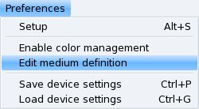

Medium selection:
Medium selection:
Select the medium from which you want to acquire an image.
For reflective scans (photos, magazines, etc.) select full color range.
XSane comes with some predefined media. With some luck you can use such
a predefined media, but in general you have to create your own media
definitions because each scanner model generates slightly different colors.
Especially for negatives you have to define a media for each negative type
because they all have a different color of the film mask.
When you change the selection then it may be necessary to
do a new preview scan to get correct colors in the preview window.
The small point left of the Acquire Preview button in the
preview window tells you if the preview is correct or not.
Set the color correction sliders to default before you do a preview scan.
With a correct media definition you should get a preview with more or
less natural colors. But you have to apply a color correction afterwards.
You can not expect that the results are ok without a fine correction of the
colors. You can start with an automatic correction but especially for
negatives it is good to do a manual fine correction before the final scan.
Create or edit a medium definition:
You can create and store your own definitions for different source media.
In the preferences menu there is an item edit medium definition.

When you enable this item then the icon before the
slection menu of the medium gets a little slider on its right side:
Edit medium definition:
When this icon is visible then you can edit and create medium definitions.
Do not use this mode to scan images, xsane will not behave like you expect
when you try to scan images in this mode.
-
To define a medium for color scan disable the RGB default button
then you have sliders for each color separately.
-
 When you want to define a medium definition for a negative
then activate the negative button.
When you want to define a medium definition for a negative
then activate the negative button.
-
Now do some preview scans from the medium you like to define.
Set the color correction sliders brightness
and contrast so that you cut almost all unused color levels.
Do not cut any used color levels. It is better to keep a little
safety distance to the used colors. You can do a color correction
later in the preview window to cut unused colors, but
when your medium definition cuts colors that are used in your images
then you are not able to get these colors back.
For negatives it is a good idea to select a part of the frame around the
image, but if possible do not select any holes. The frame around the image
defines the color of the film mask. In general the image does not contain
such a color but you can be sure that this mask defines one end of the used
color range.
-
Set the gamma sliders so that you get natural colors. If you are unsure better
leave the gamma value close to 1.0, you can apply the gamma correction later.
- To save the new definition or to rename, delete or reorder existing definitions:
- open the medium menu with a short click with the left mouse button.
- Move the mouse pointer to the entry that you want to edit or where you
want to add the new entry.
- Press and hold the right mouse button to open the context menu.
- Select a function in the context menu:

Remark: The item add medium definition is only available in the context menu
when edit medium definition in the preferneces menu is enabled.
- When you save new media definitions then please use the manufacturer and
the type of the medium as name.
-
Disable edit medium definition in the preferences menu.
-
Test the newly created medium definition. It may be necessary to repeat these steps
some times for fine correction to get a usable definition.
When you created good medium definitions please send the
file ~/.sane/xsane/xsane.mdf to
Oliver Rauch
and please tell me the name of the scanner that was used
to create the medium definitions.
I hope we can generate a database of medium definitions
for different scanners.